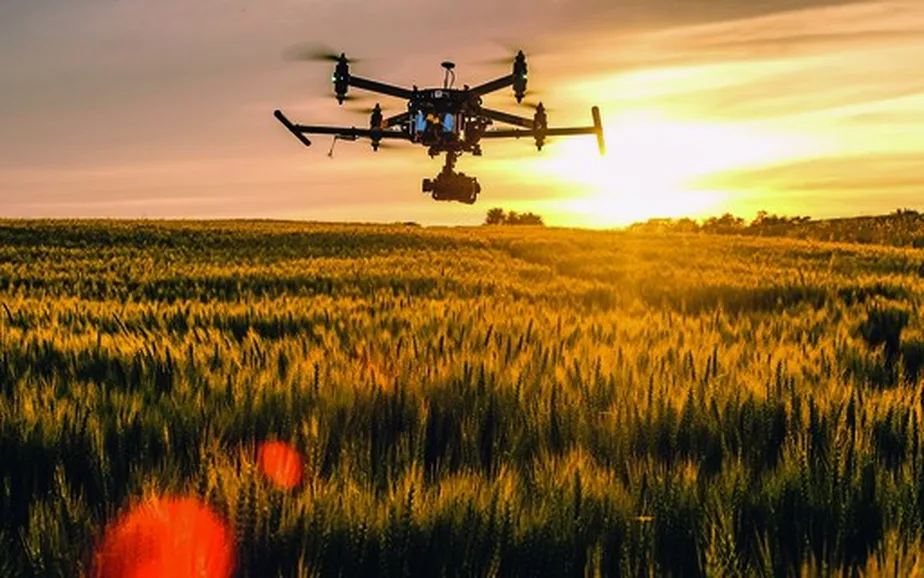

O equilíbrio perfeito entre a alta produtividade e a preservação do meio ambiente.
Conhecer o ProjetoGarantir a segurança alimentar do planeta através de lavouras otimizadas, manejo inteligente do solo e alta eficiência no campo.
Preservar recursos hídricos, utilizar bioinsumos e proteger a biodiversidade para que as próximas gerações continuem colhendo.
Unir a tradição do campo com as exigências ecológicas modernas, provando que o desenvolvimento e a natureza caminham juntos.
Para alcançar o equilíbrio real, o produtor de hoje utiliza drones de monitoramento, sensores de umidade de solo e inteligência artificial para aplicar recursos apenas onde é necessário.
Isso reduz o desperdício, corta custos e protege o ecossistema ao redor da propriedade rural.

Assista a uma breve explicação sobre como a tecnologia impulsiona a sustentabilidade no agronegócio.
Como o agro moderno consegue produzir mais poluindo menos?